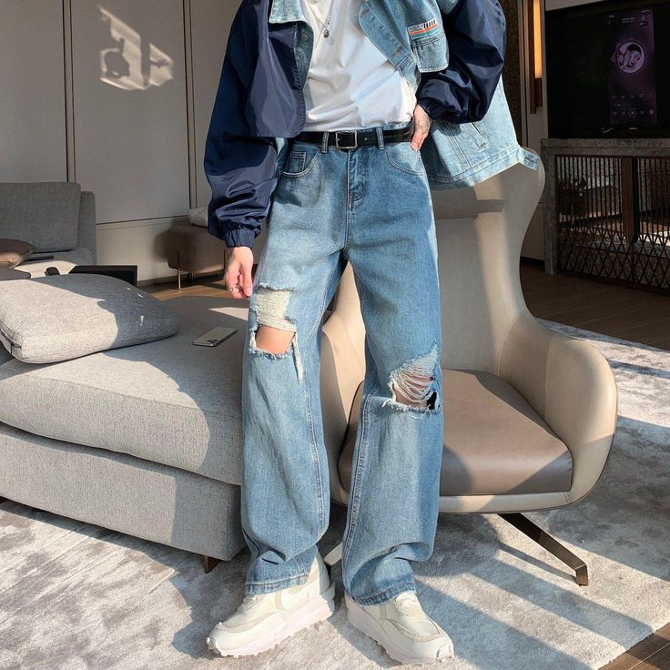
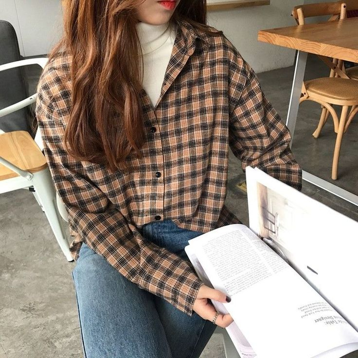
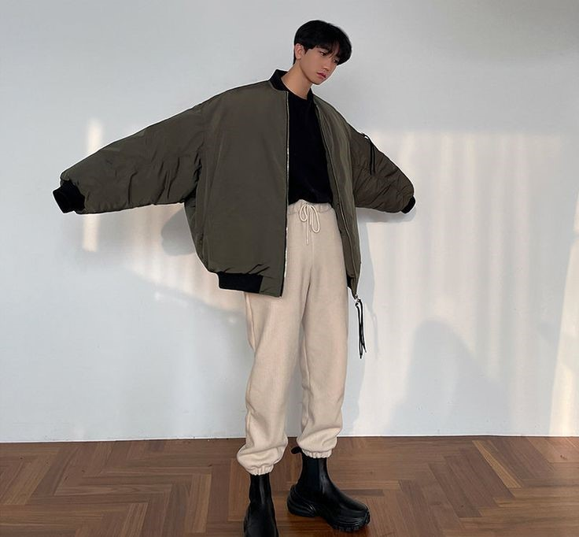
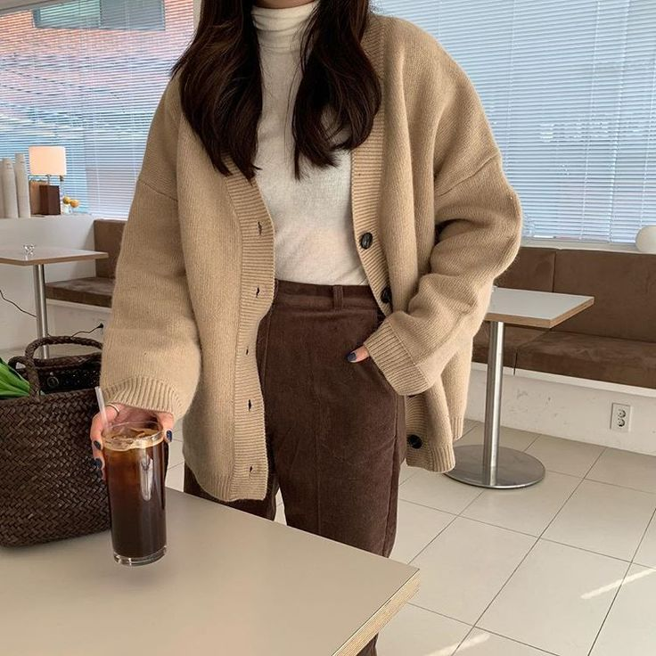

1980s
The 1980s witnessed a vibrant and eclectic fashion scene, marked by iconic trends that continue to influence style today. Oversized blazers with broad shoulder pads became synonymous with power dressing, reflecting the changing roles of women in the workforce. Denim took center stage, with acid-washed and distressed jeans gaining popularity, especially in high-waisted and baggy styles. The '80s fashion landscape was a dynamic mix of bold silhouettes, vivid colors, and diverse styles, capturing the spirit of the era.


1990s
The 1990s fashion scene was characterized by a diverse mix of styles that reflected the cultural shifts of the era. Grunge fashion took center stage with the widespread popularity of flannel shirts, often worn oversized and layered for a relaxed and casual look. Overalls became a staple, favored for their comfortable and laid-back aesthetic. The '90s fashion landscape showcased a blend of casual grunge and more refined preppy elements, capturing the essence of a decade marked by style diversity.
2000s
The 2000s marked a diverse fashion era with various trends capturing the essence of the time. Bootcut jeans were a staple, featuring a slight flare at the hem that complemented both casual and semi-formal looks. Vests experienced a resurgence, with fitted and layered styles becoming popular for adding a touch of sophistication to outfits. Cargo pants, characterized by multiple pockets and a relaxed fit, became a go-to choice for a utilitarian and laid-back aesthetic. The fashion landscape of the 2000s embraced a mix of retro revivals and contemporary styles, reflecting the eclectic nature of the era.


2010s
The fashion landscape of the 2010s was characterized by a mix of nostalgic references and contemporary aesthetics. The bomber jacket became a ubiquitous style statement, blending sporty and streetwear influences. Crop tops also experienced a resurgence, becoming a staple in many wardrobes. This trend celebrated midriff-baring styles, offering a playful and youthful element to fashion.
2020s
In the 2020s, fashion trends embraced a blend of comfort and sophistication. Cardigans made a stylish comeback, evolving from traditional knitwear to versatile layering pieces. Leather, in both faux and genuine forms, continued to be a major trend. Leather jackets, pants, and skirts were celebrated for their timeless appeal and edgy flair, while sustainable and cruelty-free options gained popularity. The fashion landscape of the 2020s reflected a balance between classic elegance and a contemporary focus on ethical and sustainable choices.
